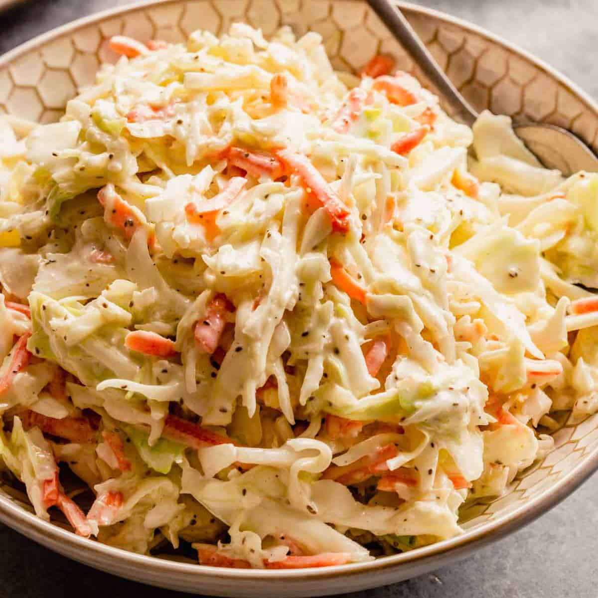

Coleslaw

This sweet coleslaw recipe tastes like the slaw served at popular fried chicken or fish restaurants. It's excellent with burgers or on top of BBQ pork sandwiches, too!
Ingridients:
- Coleslaw mix
- Diced onion
- Creamy salad dressing
- Sugar
- Oil and vinegar
- Poppy seeds and salt
How to make coleslaw step by step:
- Combine coleslaw mix and onion in a large bowl
- Whisk everything else together until blended
- Pour dressing over coleslaw and toss to coat
- Chill for at least 2 hours before serving
Enjoy!